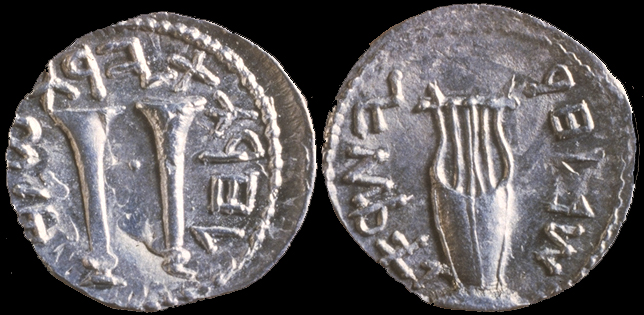

Bar Kokhba Revolt Tetradrachm

- Find Name
- Bar Kokhba Revolt Tetradrachm
- Description
- A silver sela (tetradrachm) of the Bar Kokhba revolt, about 25-27 mm and 13.6-14.4 g, struck AD 132-135. Like all Bar Kokhba coins, it was overstruck on a Roman provincial coin already in circulation (mainly tetradrachms and drachms of Antioch, Tyre, and Caesarea in Cappadocia, plus denarii), because the rebel government had no full mint of its own. The obverse shows the facade of the Jerusalem temple with a star above and 'Shim'on' (Simon) in Paleo-Hebrew, with the Ark of the Covenant or showbread table within; the reverse shows a lulav with an etrog and 'Year Two of the Freedom of Israel' or 'For the Freedom of Jerusalem'. Year 1 and 2 issues are dated; Year 3 (AD 134-135) issues are undated. This was the last Jewish coinage in antiquity.
- Historical Period
- Roman Period (63 BC-AD 324)
- Evidence Class
- Contextual
- Interpretations
- The temple facade and star on the coin show that restoring the temple was a central goal of the revolt, and the name 'Shim'on' with the star is the visual form of the messianic title Bar Kokhba ('Son of the Star'). The rebels never captured Jerusalem - only 5 Bar Kokhba coins had been found in Jerusalem as of 2024 - so the temple on the coin is an aspiration, not a record of a rebuilt temple. The coin is a warning as well as a witness: it shows a messianic movement that ended in catastrophe.
- Alternative Names
- Bar Kokhba Sela;Bar Kokhba Silver Shekel
- Related Places
- Related Books
- Scripture Illuminated
- Biblical Significance
- Matthew 24:24 warns that false messiahs will appear and deceive many if possible; Bar Kokhba, hailed by many as messiah and pictured with a star on his coins, is presented here as an application of that warning, not as a direct identification of the verse.
- Artifact Date
- AD 132-135
- Current Location
- Israel Museum, Jerusalem and other collections (examples)
- Discovery Location
- Judaea (rebel-held areas; few found in Jerusalem)
- Timeline Era
- Early Church
Awaiting Review Not yet checked against scholarly sources. Treat its claims as provisional until this entry is reviewed. About verification
Sources: https://en.wikipedia.org/wiki/Bar_Kokhba_revolt_coinage
https://cojs.org/the_holy_land_in_coins-_yaakov_meshorer-_bar_mar_1978/
https://cojs.org/the_holy_land_in_coins-_yaakov_meshorer-_bar_mar_1978/
Last reviewed: not yet reviewed